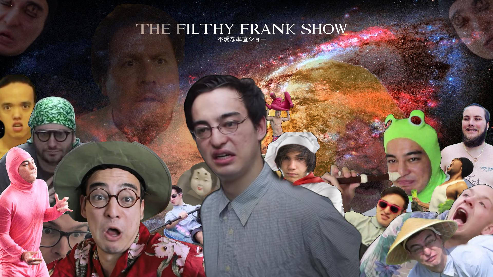

The Filthy Frank Show is a series of comedic videos/vlogs depicting the life and adventures of a man by the name of Filthy Frank, summarized in the description of his main YouTube channel as "everything a person should not be". The show revolves around him and his friends talking about various topics and taking part in multiple life-threatening shenanigans.
Miller always had a passion for music composition. His music under Pink Guy is often comical, staying true to the nature of his YouTube channel. His debut album, Pink Season, debuted at number 70 on the Billboard 200. Under his comedy rap stage name, Pink Guy, Miller has produced one mixtape, one album, and one extended play: Pink Guy, Pink Season, and Pink Season: The Prophecy, respectively.
Chloe Burbank: Volume 1 was a potential album Joji worked on behind the scenes during his Filthy Frank days. While there is hardly any information about the album, he released two singles in 2015 that featured the same cover art ("Thom", "You Suck Charlie").